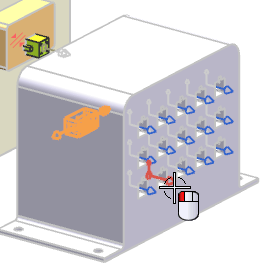
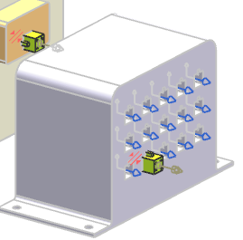

Add the same 4-pin connector to one connection in the controller
-
Select the port on the second connector from the left on the bottom row.

-
Make sure both the Lock Engagement and Lock Rotation check boxes are selected.
-
点击确定。

Note
Assembly Constraints are applied to the connectors as you place them in your assembly. If you wish to turn their symbols off in the view, open the Assembly Navigator
 , then right-click the Constraints node under the harness subassembly and clear the Display Constraints in Graphics Window check box.
, then right-click the Constraints node under the harness subassembly and clear the Display Constraints in Graphics Window check box.